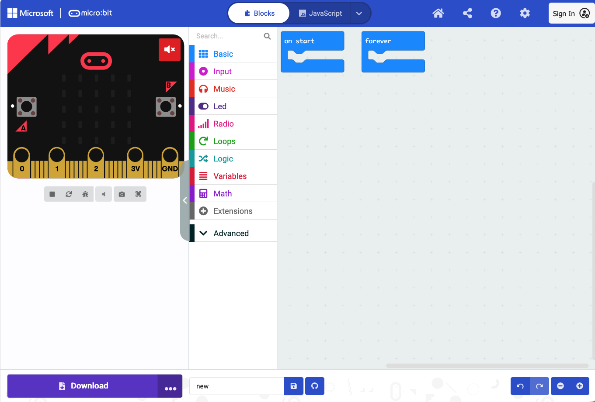

Lecture 2: Programming with MakeCode
This is a pre-course lecture. Watch the recorded video, then complete the Lecture 2 quiz on Canvas before the course starts.
Learning objectives
By the end of this lecture you should be able to:
- Explain what a program is
- Navigate the MakeCode block editor
- Describe the difference between
on startandforever - Use variables, conditionals, loops, and functions in MakeCode
- Explain how code gets from your browser onto the micro:bit
1. What is a program?
A program is a set of instructions, written in a language a machine can follow, that tells it exactly what to do: in what order, under what conditions, and how many times.
Consider a clinical protocol for managing a febrile patient:
- Measure temperature
- If temperature is above 38.5°C, administer paracetamol
- Wait 30 minutes
- Measure temperature again
- If still above 38.5°C, escalate to the doctor
- Repeat every hour
This is a program. It has measurements, decisions, waiting, and repetition. Programming a microcontroller is the same kind of thinking: you are writing a protocol for a machine to follow.
The difference is that a machine follows instructions with complete literalness. It does exactly what you write, nothing more, nothing less. If your instructions are ambiguous or out of order, it will fail silently or behave unexpectedly. Precision matters, and testing the programm under different circumstances is a necessity.
2. MakeCode
MakeCode is a browser-based programming environment for the BBC micro:bit, developed by Microsoft. You do not need to install anything — it runs at makecode.microbit.org.
MakeCode uses blocks: coloured, puzzle-piece shaped instructions that you drag and snap together. This removes the need to type code manually, which reduces errors and lets you focus on logic rather than syntax.
The interface has three panels:
- Left — simulator: a virtual micro:bit that runs your program in the browser, so you can test without hardware. The color of the microbit can vary, but the functionality stays the same.
- Middle — toolbox: blocks organised by category (Basic, Input, Logic, Loops, Variables, Functions, and more).
- Right — workspace: where you drag blocks and build your program. If the shapes of the blocks from the middle fit together they can be used together in a program.
The simulator is useful but limited — it can only simulate the micro:bit’s built-in components. External sensors connected via the Sensorbit cannot be simulated; for those, you need the physical device.
You can switch between Blocks, JavaScript, and Python views using the buttons at the top of the screen. The same program looks different in each view, but they all do the same thing.

on start and forever blocks are already placed in the workspace when you create a new project.3. on start and forever
When you open MakeCode, two blocks are already on the workspace.
on start runs its contents once, when the micro:bit powers on or resets. Use it for setup: displaying a startup message, setting initial variable values.
forever runs its contents in a continuous loop, repeating as long as the micro:bit is powered on. Use it for monitoring: reading sensors, checking conditions, updating a display.
Most programs use both:
on start:
show "Ready"
forever:
read temperature
if temperature > 38:
show warning icon
else:
show temperature value
wait 2 secondsNotice that the threshold is a whole number. The micro:bit’s built-in temperature sensor reports whole degrees only — it will read 38 or 39, never 38.5. A threshold of > 38.5 would behave exactly like > 38 but suggest a precision the sensor does not have. The clinical protocol in Section 1 can say 38.5°C; your program should use thresholds that match what the sensor can actually measure.
The forever loop is why your device keeps working without you pressing anything — it is constantly cycling through its instructions, checking and responding.
basic.showString("Ready")
basic.forever(function () {
let temperature = input.temperature()
if (temperature > 38) {
basic.showIcon(IconNames.Target)
} else {
basic.showNumber(temperature)
}
basic.pause(2000)
})4. Variables
A variable is a named container for a value that can change.
Think of it as a labelled box. You put a number, a piece of text, or a true/false value into the box, give the box a name, and refer to it by that name later in your program.
set temperature to 0
forever:
set temperature to [read temperature sensor]
show temperature on displayVariables are essential because they let your program work with values it does not know in advance — like a sensor reading that changes every second.
Variable types you will use:
- Number — any numeric value (37.2, 0, -5)
- String — text (“Ready”, “Warning”, “Team A”)
- Boolean — true or false only, used for on/off states and conditions
let temperature = 0
basic.forever(function () {
temperature = input.temperature()
basic.showNumber(temperature)
})5. Conditionals
A conditional lets your program make a decision: do one thing if a condition is true, do something else if it is not.
if temperature > 40:
show "CRITICAL"
else if temperature > 38:
show "FEVER"
else:
show "NORMAL"The micro:bit evaluates conditions from top to bottom and runs the first branch that is true. Only one branch runs per evaluation.
Comparison operators you will use:
| Operator | Meaning |
|---|---|
> |
greater than |
< |
less than |
= |
equal to |
≥ |
greater than or equal to |
≤ |
less than or equal to |
if (temperature > 40) {
basic.showString("CRITICAL")
} else if (temperature > 38) {
basic.showString("FEVER")
} else {
basic.showString("NORMAL")
}6. Loops
A loop repeats a block of instructions.
forever is one kind of loop. But sometimes you want to repeat something a specific number of times, or only while a condition holds.
Repeat N times — runs exactly N times, then stops:
repeat 5 times:
show heart icon
wait 500 ms
clear display
wait 500 msWhile loop — repeats as long as a condition is true:
while temperature > 38:
play alarm sound
wait 1 second
read temperature againLoops require care. A loop with a condition that is never false will run forever and freeze your program. Always make sure a loop has a clear exit condition.
// Repeat N times
for (let index = 0; index < 5; index++) {
basic.showIcon(IconNames.Heart)
basic.pause(500)
basic.clearScreen()
basic.pause(500)
}
// While loop
while (temperature > 38) {
music.playTone(880, music.beat(BeatFraction.Whole))
basic.pause(1000)
temperature = input.temperature()
}7. Functions
A function is a named block of instructions you can call from anywhere in your program.
If you find yourself writing the same sequence of blocks in multiple places, put it in a function:
function showAlert:
show warning icon
play high tone
wait 1 second
clear display
forever:
if temperature > 38:
call showAlert
if motion detected:
call showAlertFunctions make programs shorter, easier to read, and easier to fix — if the alert behaviour needs to change, you update it in one place, not everywhere it appears.
In MakeCode, you create functions in the Functions category in the toolbox.
function showAlert() {
basic.showIcon(IconNames.Target)
music.playTone(880, music.beat(BeatFraction.Whole))
basic.pause(1000)
basic.clearScreen()
}
basic.forever(function () {
if (temperature > 38) {
showAlert()
}
if (motionDetected) {
showAlert()
}
})8. Reading a sensor
Reading a sensor means getting a value from a connected input device and storing it in a variable. The pattern is always the same:
set [variable name] to [sensor reading block]For the micro:bit’s built-in temperature sensor this is straightforward. For external sensors connected via the Sensorbit, you will use extension blocks provided by Elecfreaks — we will look at those specifically in Lecture 3. The principle is identical.
9. Getting your program onto the micro:bit
Once you satisfied with your program, you need to transfer it to the micro:bit:
- Connect the micro:bit to your laptop with a USB cable
- The micro:bit appears as a USB drive called MICROBIT
- In MakeCode, click the Download button (bottom left of the workspace)
- A
.hexfile is saved to your computer - Drag or copy the
.hexfile onto the MICROBIT drive - The orange LED on the micro:bit flashes while it writes the program
- When it stops flashing, the program is running
You will do this many times during the lab. It takes about 10 seconds. You cannot permanently break a micro:bit by transferring a bad program — simply download and transfer again.
And that means that you can also play around with the programs, they don’t have to be perfect from the start. In reality all programs go through an iterative process while they are written and tested.
Summary
- A program is a precise set of instructions for a machine to follow
- MakeCode uses drag-and-drop blocks and runs in the browser at makecode.microbit.org
- The interface has a simulator (left), toolbox (middle), and workspace (right)
on startruns once at startup;foreverruns continuously- Variables store values that change, like sensor readings
- Conditionals make decisions (
if / else if / else) - Loops repeat instructions (
repeat N times,while,forever) - Functions group reusable instructions under a name
- Programs are transferred to the micro:bit as a
.hexfile via USB
Complete the Lecture 2 quiz on Canvas before the course starts on 16 June.